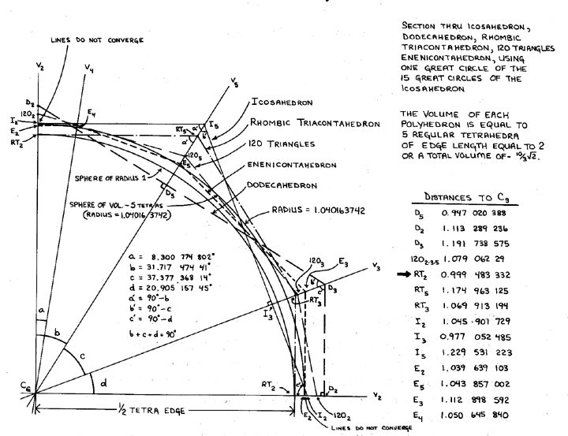

|  |
| Fig. 986.314 Polyhedral Profiles of Selected Polyhedra of Tetravolume-5 and Approximately Tetravolume-5: A graphic display of the radial proximity to one another of exact and neighboring tetravolume-5 polyhedra, showing central angles and ratios to prime vector. |